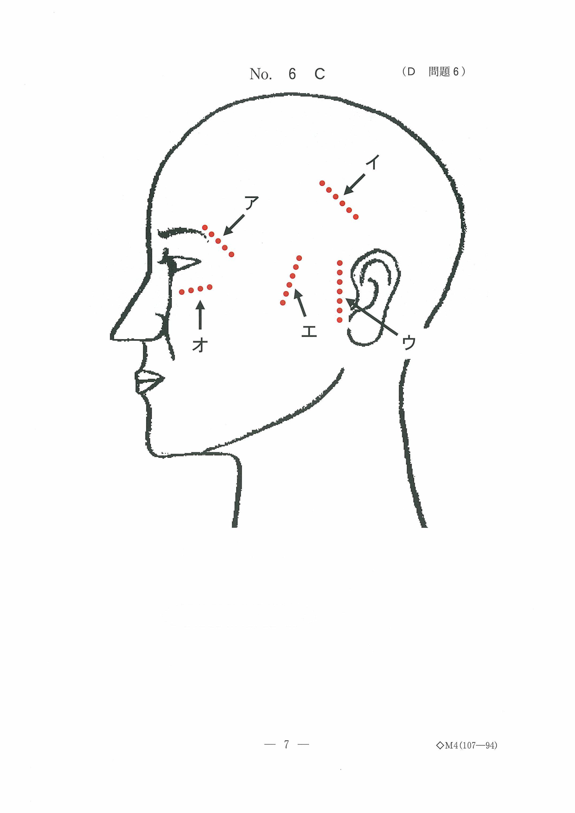
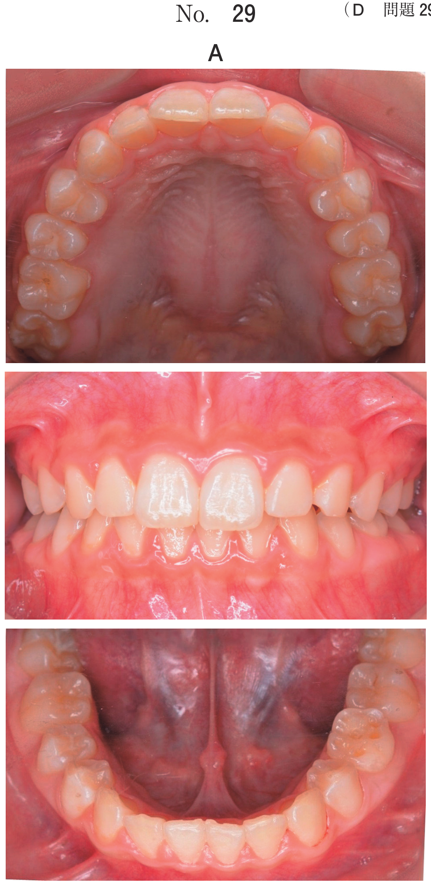
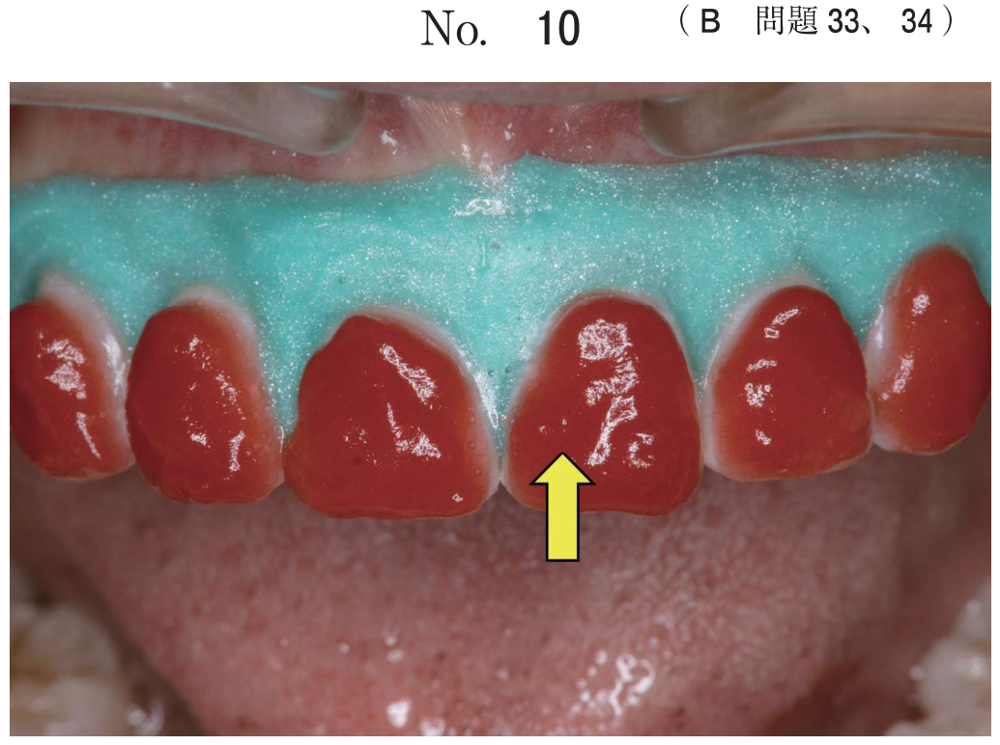

ろう義歯試適
ろう義歯試適とは
ろう義歯（wax denture）とは、人工歯排列と歯肉形成が完了した重合前の義歯をいう。ろう義歯の試適（try-in）時には、以下の項目を検査し、チェアサイドで必要な修正を行う。
1. 義歯床形態の検査
- 床縁形態：コルベン状になっているか確認
- 義歯床研磨面形態：フレンジテクニックで周囲組織と調和
- S字状隆起：[s]音、[t]音、[d]音の発音を助ける
- 口蓋ヒダ（皺襞）・切歯乳頭：舌位置の確認を容易にする
- ポストダムの位置確認
- 義歯の浮き上がりの有無
2. 咬合関係の検査
咬合高径
顔貌の自然感を確認するとともに、適切な安静空隙量（2〜3mm）が確保されているか、嚥下や発音などの機能に問題がないかを確認する。
中心咬合位
- 転覆試験：ピンセットやスパチュラを上下の人工歯間に挿入して咬合状態の緊密性を確認
- チェックバイト：咬合にずれが認められる場合は採得し、咬合器再装着を行う
偏心咬合位
側方咬合位および前方咬合位における前歯部人工歯と臼歯部人工歯の同時接触の有無を咬合紙などを用いて確認する。
中心位でのチェックバイト採得後、咬合にずれが認められる場合は下顎模型を咬合器に再装着する（上顎模型はフェイスボウで装着済み）。
3. 人工歯の排列位置と舌房の検査
ろう義歯装着時に第一大臼歯人工歯部を左右交互に押して、反対側の脱離がないかを確認する。脱離する場合は片側性咬合平衡が獲得されていないと判断し、人工歯の排列位置を再検討する。舌房の広さ、舌側縁と下顎人工歯の位置関係を確認する。
4. 審美性の検査
- 人工歯の選択と排列、歯肉形成
- 上顎前歯部切縁の水平的位置（スマイルライン）
- 口唇部の位置、臼歯部の咬合平面の位置
5. 発語機能の検査（パラトグラム）
パラトグラム法により、発音時に舌が口蓋や歯列のどの範囲に接触するかを検査する。義歯口蓋面にワセリンを塗布し、アルジネート印象材の粉末を散布した後に発音させる。
各発音と舌の接触部位
| 発音 | 接触部位 |
|---|---|
| /k/（カ行） | 軟口蓋〜口蓋後方部 |
| /s/（サ行） | 口蓋皺襞部（S字状隆起付近） |
| /t/（タ行）、/n/（ナ行） | 口蓋皺襞部〜歯頸部 |
| /r/（ラ行） | 口蓋皺襞部付近 |
カ行の発音障害：義歯床後縁部の厚径が原因となることが多い。
6. フィニッシュラインの決定
フィニッシュラインは、義歯床粘膜面と研磨面の境界線。ろう義歯試適直後に決定する。
7. 咬座印象（咬合圧印象）
咬合時の顎堤粘膜の状態を採得する印象法。現有義歯を用いることがある。流動性の高い印象材を用いて、咬合させた状態で印象採得する。
過去問
68歳の女性。1週前に上下顎全部床義歯を装着したが、カ行の発音障害を訴えて来院した。カ音発音時のパラトグラム（別冊No.8）を別に示す。
修正が必要な部位はどれか。1つ選べ。

b 義歯床後縁部の厚径
c 義歯床後縁の設定位置
d 小臼歯部研磨面の豊隆
e 前歯部人工歯の排列位置
【解説】カ行（/k/音）は舌後方部と軟口蓋〜口蓋後方部の接触で発音される。カ行の発音障害は義歯床後縁部の厚径が原因となることが多い。
上顎全部床義歯のフィニッシュラインを決定する時期はどれか。1つ選べ。
b 人工歯選択直後
c 蝋義歯試適直後
d 最終印象採得直後
e 概形印象採得直後
【解説】フィニッシュラインはろう義歯試適直後に決定する。試適で義歯床形態を確認した後、埋没前に決定する。
75歳の男性。上下顎全部床義歯を製作中である。審美性を確認した後に中心位でのチェックバイトを採得した。咬合器上の蝋義歯の写真（別冊No.7A）と口腔内試適時の写真（別冊No.7B）を別に示す。
次に行うのはどれか。1つ選べ。

b 人工歯削合
c 側方顆路角調節
d 下顎模型再装着
e 矢状顆路傾斜角調節
【解説】中心位でのチェックバイト採得後、咬合にずれが認められる場合は下顎模型を咬合器に再装着する。
77歳の男性。上顎全部床義歯が外れやすいことを主訴として来院した。検査の結果、上下顎全部床義歯を製作することとした。人工歯排列後に行っている検査中の写真（別冊No.00）を別に示す。
検査しているのはどれか。2つ選べ。

b 咀嚼運動
c 被圧変位
d 最大咬合力
e スマイルライン
【解説】写真から舌房（舌のスペース）とスマイルライン（上顎前歯部切縁の水平的位置）を検査している。
正常な構音が可能な無歯顎患者における、全部床義歯製作過程のある検査の標準的な結果の写真（別冊No.16）を別に示す。
発音したのはどれか。1つ選べ。

b /p/
c /s/
d /t/
e /v/
【解説】パラトグラムで口蓋後方部〜軟口蓋付近に接触が見られる場合は/k/音（カ行）。/s/や/t/は口蓋皺襞部付近に接触する。